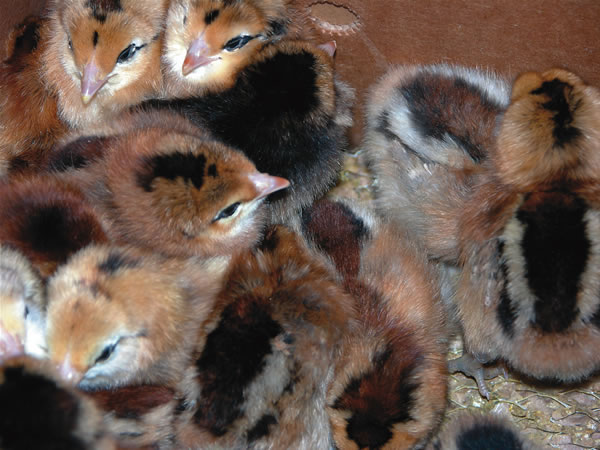
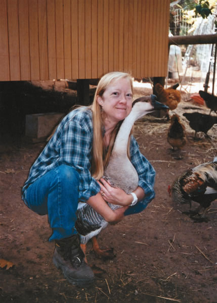
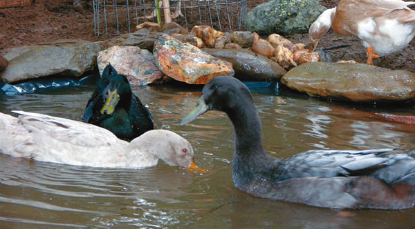
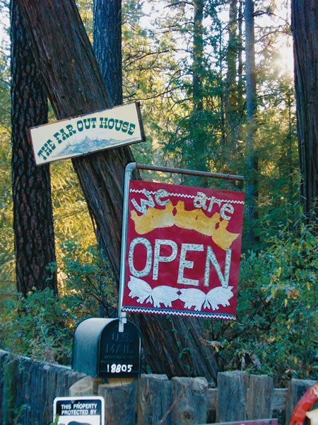
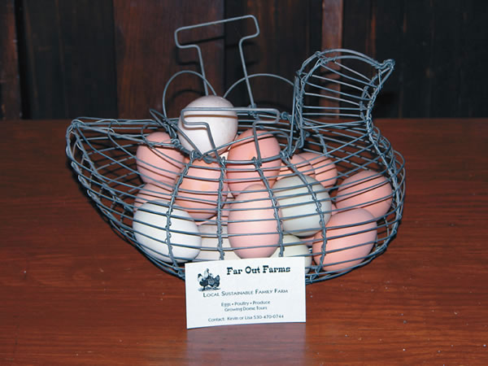
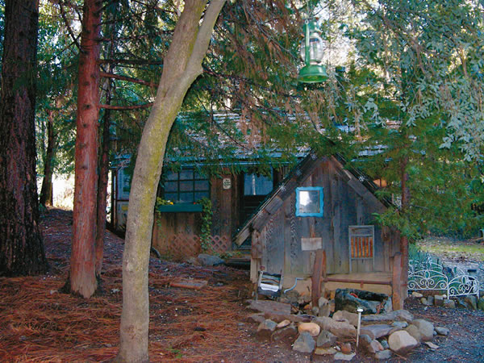
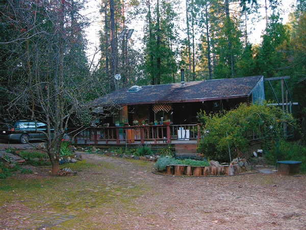

Our Far-Out Free-Range Eggs
April/May 2006
We raise poultry to produce the most nutritious eggs, and we teach others how to do the same. By Lisa Jansen Mathews
My husband, Kevin, and I live on a small farm in northern California named Far Out Farms. Although our property is only two and a half acres, its large enough to produce several cash crops, including apples and supernutritious eggs from pastured chickens and ducks.
We moved here seven years ago, but I first saw the property at least a decade before, when my two young sons and I drove by on the way to our favorite state park. We saw an old sign for the Far Out House hanging in a cedar tree at the driveway gate. The property was so heavily forested that we couldnt see the house from the road, but there was a hand-painted hippie bus parked outside. For fun, we made up stories as we drove by. We pretended that the Far Out House was everything from a hideout for secret agents to a nudist commune.
I was a single parent for many years, but the boys are grown up now. One day, one of my sons introduced me to Kevin, an older friend he worked with. Sparks flew, and Kevin and I got married. Shortly afterward, he noticed that the Far Out House was for sale. Kevin had heard my sons stories about the house, and just for fun, he grabbed a real estate flier and brought it home. His jaw dropped when I started seriously scanning the flier. Six months later, the Far Out House was ours.
It didnt take much to stir my farming genes. My family has been farming in California for more than 100 years, ever since 1889, when my great-grandfather and his two younger brothers came over from Germany. They purchased a 40-acre farm that supported our family for several generations. I discovered my own love of growing crops in junior college, when I paid my way through school by working in the college greenhouse. Since then, I have gardened on campuses, in wading pools and in the grassy strips between parking lots. I love being able to feed my friends and family from any available patch of dirt, but when we purchased the Far Out House, it was my first chance to raise food on a larger scale.
Fixing up the Farm
The first thing we did after purchasing the property was to hit the books and learn more about rural living. The house is so far out of town that it is completely off the electrical grid, and everything on the property is solar-powered. We knew we would have a lot of work to do because the property was unkempt and generally run-down, so we read about wells and pumps, sewage systems, generators and solar power.
The Far Out House was not built for beauty; its builders had function and conservation in mind. To the best of anyones memory, the house was built in the 60s. The lumber was milled on-site from cedar trees cut from the property. All the windows and fixtures are secondhand. There are no bedrooms, only sleeping lofts accessible by ladder. The previous owners added a kitchen and dining room in the 70s, and a small office and a bathroom sometime during the 80s.
The fixtures are even older than the house. The bathtub is from 1915, the bathroom sink from 1941 and the cookstove from about 1930. The property also has numerous outbuildings, including a small, rustic cabin. Our six 75-watt solar panels were here when we moved in, and they have been very dependable, requiring minimal maintenance.
I have been asked many times, How did the Far Out House get its name For years we did not know. We thought it could have been inspired by the popular 60s phrase far out, or possibly by its long distance from any town. Just recently, a long-time neighbor cleared up the mystery. He said the original owners came up with the name because the outhouse was so far from the house!
As we began cleaning, painting, repairing, pruning and raking the property, I realized how much we could do even with this small amount of land. We began by selling apples from the orchard, farm-fresh chicken eggs and campfire wood. Fortunately, our property is located next to a campground, so we have a steady stream of customers who enjoy coming to the farm.
A year later, we began selling duck eggs to two local stores I had bought the ducks purely for enjoyment, but I soon found that we had many customers who were eager to buy them. In British, Chinese and Japanese cooking, duck eggs are often used instead of chicken eggs. I also raised geese and sold their eggs for a short time, but discovered that geese require more space than we had available, so I gave them to a friend with a larger pond.
Raising Healthy Animals
My grandfather always said that farm animals should be given a good life. Practices such as locking birds in small cages or feeding them stale bakery goods an ingredient in some poultry feeds just did not meet Grandpas standards. I wanted to raise our chickens and ducks with access to green pastures and sunshine. Our heavily forested land had little pasture space, but we increased it by pruning and thinning some of the trees. Old apple trees, maples, pines, madrones and cedars perked up while the sun warmed the soil, and the natural grasses began to revive.
In college I majored in nutrition, so I began applying that knowledge to raising poultry. I have been studying how the nutrient content of eggs is influenced by what the birds eat. According to the latest research, eggs from pasture-fed birds are lower in cholesterol and higher in vitamin A and vitamin E. (For more information, visit The Chicken and Egg Page at www.MotherEarthNews.com/eggs. Mother) The eggs also contain more omega-3 fatty acids, which are essential for heart health. Our eggs are lab-tested for their fatty acid content, and the results are the benchmark I use to make feed and management choices. We cant keep up with the demand for our omega-3-enriched chicken and duck eggs. Last year we sold about 700 dozen eggs, at $3.25 a dozen for chicken eggs and $3.50 a dozen for duck eggs.
When we started raising poultry, I began to experiment with different pasture grasses and seed mixtures. Using the right seed mix in a pasture where you keep free-range birds will increase the omega-3 content of your flocks eggs. Peaceful Valley Farm and Garden Supply sells one of my omega-3 seed mixes in its catalog. Some of the seeds I am currently using in the pasture include purslane, clovers, vetch, alfalfa, cowpeas, mung beans, flax, oats, buckwheat and teff.
Our hens eat as much wild food as is available pasture grasses, seeds and bugs and then we supplement their diet with high-quality organic feed. The ducks eat a mixture of grasses, vegetables and commercial waterfowl food. We dont push egg production with antibiotics. Our birds live long lives, and I believe keeping the birds healthy leads to more nutritious eggs and a longer production cycle.
Lifelong Learning
After we began selling eggs, I started getting questions from other owners of small flocks, ranging from Do I need a rooster to get eggs (the answer is no) to Why do my ducks lay soft-shelled eggs (often the problem is diet chicken, turkey or wild-game food does not meet the nutritional needs of waterfowl).
I decided there was more than enough interest to teach a poultry-care class, and I now offer a regular course that teaches everything from making inexpensive brooding cages to postmortem examinations. We also offer longer-term, hands-on learning. These guests stay for a few days in our cabin; some of them come to stay because they are interested in our egg production system, and some want to learn more about solar power and rural living.
Guests at the cabin begin each morning with two fried eggs one chicken egg and one duck egg. Many of our guests claim they do not like duck eggs, but then decide theyre delicious after trying them.
Next, the guests come along on my morning rounds, so we head to the duck pond in waders and gloves. We discuss bloom, a natural coating on the egg that acts as a barrier to bacteria. Then we move on to the chicken coop. We discuss keeping nest boxes clean and how to keep roosters separated so they wont fight. Someone always asks about the two ducks living with the chickens. We have a Buff Orpington hen that hatched two Indian Runner ducks, Hansel and Grettle, who insist they are chickens!
The year 2002 brought some serious changes in my life. I had two strokes followed by 10 months of seizures. I thought my farming days had come to an end. I struggled to walk, my speech was impaired, and my memory and recognition abilities were damaged. But slowly, I have returned to farming, employing adapted techniques. I never would have guessed it the first time I saw the Far Out House, but this place has had a profound impact on my life. Living here has not only put me in touch with my farming roots, it has given me incentive to heal.
Farming is in my blood and in my soul. I have long been convinced that, as a culture, our nutrition can be no better than our farming practices. This farm is an ongoing science class. Right now, we are working on increasing the conjugated linoleic acid content in the eggs and trying new types of forage. Here, on this tiny piece of the planet, I have a place to test my theories and live my dreams.
Visit www.faroutfarms.com to learn more about Lisa Jansen Mathews farm and poultry-care workshops.
|
 The author with a goose from her farm, and a few recently hatched chicks. |
 Two Indian Runner ducks and a Khaki Campbell duck enjoy a morning swim in their pond. |
 Far Out Farms is located near Nevada City, Calif. |
|
 Eggs from Far Out Farms are rich in heart-healthy omega-3s. |
 The rustic guest cabin. |
 The Far Out House was built in the ’60s from lumber harvested on-site. |
|
 |
 |
|